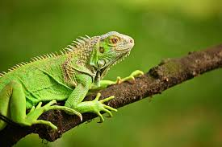

Iguana Verde

Hábitat y estilo de vida:
La iguana verde (Iguana iguana) es un reptil arborícola que habita en selvas tropicales de América Central y del Sur. Es una especie diurna que pasa la mayor parte del tiempo en los árboles, utilizando su larga cola y afiladas garras para trepar con facilidad. Su dieta es mayormente herbívora, alimentándose de hojas, flores y frutas.
Son animales pacíficos, aunque pueden defenderse con golpes de cola y mordiscos si se sienten amenazadas. Durante la época de apareamiento, los machos se vuelven más territoriales y exhiben colores más brillantes para atraer a las hembras. Son expertas nadadoras y pueden sumergirse en el agua para escapar de los depredadores. Su longevidad en estado salvaje puede alcanzar los 20 años.
Características
- Tamaño: Puede crecer hasta 2 metros de longitud, incluyendo su cola.
- Alimentación: Su dieta es completamente herbívora.
- Defensa: Utiliza su cola como látigo y puede desprenderse de ella para huir.
- Adaptación: Es una excelente nadadora y trepadora.
- Estado de conservación: No está en peligro, pero su captura como mascota afecta su población.
Regresar a la página principal